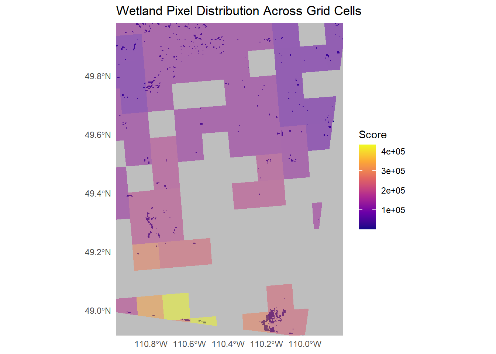

library(terra)
library(sf)
library(tidyr)
library(dplyr)
library(stringr)
library(rnaturalearth)
library(exactextractr)
library(tidyterra)
library(ggplot2)
library(readr)Mapping Species-Ecotypes
Mapping Species-Ecotypes: Overview
This workflow integrates species data with spatial habitat information to produce ecotype-specific maps. The process follows three main steps:
- Raster-Grid Overlay: The ecotype raster is overlaid with the 10 km × 10 km grid. Any grid cell intersecting a raster pixel is considered to contain that ecotype.
- Column-Wise Filtering: Species are selected per ecotype to retain only those occurring within each target ecotype.
- Row-Wise Filtering: Grid cells are retained only if they contain the target ecotype.
Notes:
- Despite filtering, some zero values may remain because the presence of a species in a given ecotype does not guarantee overlap in every grid cell. These are then removed.
- For taxon-specific maps, an additional filtering step is applied to include only the relevant taxon.
Load Required Libraries
Combining Species Data with Habitat Data
The SAR scores were merged with the IUCN habitat data and supplemented with the manually classified species data where habitat information was missing. Each ecotype per species is represented in a separate row to facilitate analysis and plotting.
## Data merging
# Load in data
SAR_Scores <- read.csv("data/SAR_Scores.csv")
IUCN_Data <- read.csv("data/IUCN_Habitat_Classifications.csv")
species_data <- read.csv("data/manually_classified_species.csv")
# Load and make sure unique
# have to use common name due to sub species
SAR_Scores_unique <- SAR_Scores %>%
distinct(Common_name, .keep_all = TRUE)
# Extract COSEWIC ID for matching between files
SAR_Scores_unique <- SAR_Scores_unique %>%
mutate(COSEWICID = str_extract(File_name, "(?<=_)\\d+(?=_)"))
SAR_Scores_unique$COSEWICID <- as.numeric(SAR_Scores_unique$COSEWICID)
# Join by COSEWIC ID (can't join by scientific name due to sub species, would lose species)
merged <- inner_join(
IUCN_Data,
SAR_Scores_unique,
by = "COSEWICID"
)
# Split land cover, get unique land covers, and create long data frame
merged_long <- merged %>%
# Split comma-separated land classes into separate rows
separate_rows(`Land.Cover.Class`, sep = ",\\s*") %>%
# Remove duplicates for each COSEWICID
distinct(COSEWICID, `Land.Cover.Class`, .keep_all = TRUE)
# Using other dataset to fill missing habitats
df <- merged_long %>%
mutate(
SCI_NAME_clean = trimws(tolower(SCI_NAME)),
scientific_name_clean = trimws(tolower(Scientific_name))
)
# Join new data set
df_filled <- df %>%
left_join(
species_data %>%
select(COSEWICID, LandCover_new = `Land.Cover.Class`),
by = "COSEWICID"
) %>%
mutate(`Land.Cover.Class` = coalesce(`Land.Cover.Class`, LandCover_new)) %>%
select(-LandCover_new)
df_final <- df_filled %>%
separate_rows(`Land.Cover.Class`, sep = ",\\s*") %>%
distinct(COSEWICID, `Land.Cover.Class`, .keep_all = TRUE)
# Keep only relevant columns
merged_long <- df_final %>%
select(
COSEWICID,
TAXON,
SAR_STAT,
SCHEDULE,
'Land.Cover.Class',
Scientific_name,
Common_name,
EOO,
Range_map_source,
File_name,
Comments,
EOO_binned,
Score
)
out_file <- "species_habitats_long.csv"
if (!file.exists(out_file)) {
readr::write_csv(species_habitats_long, out_file)
}
# Save
write_csv(merged_long, "species_habitats_long.csv")Example: Raster Overlay and Grid Retention
Below is a visual demonstration using southern Alberta. Wetland pixels are overlaid on the 10 km × 10 km grid to show which grid cells are retained after filtering.
# Load in data
ecotypes <- rast("E:/SAR Project/data/can_land_cover_2020v2_30m_tif/CAN_NALCMS_landcover_2020v2_30m/data/CAN_NALCMS_landcover_2020v2_30m.tif")
combined <- st_read("output_grid_sf_score.gpkg")
# Use rnaturalearth for province boundaries
provinces <- ne_states(country = "Canada", returnclass = "sf")
alberta <- provinces %>% filter(name == "Alberta") %>% st_transform(crs(ecotypes))
alberta_vect <- vect(alberta)
# Crop first to speed up processing
ecotypes_alberta <- crop(ecotypes, alberta_vect)
# Mask so only Alberta pixels remain
ecotypes_alberta <- mask(ecotypes_alberta, alberta_vect)
# Transform
combined <- st_transform(combined, st_crs(alberta))
combined_ab <- st_crop(combined, st_bbox(alberta))
combined_ab <- st_intersection(combined_ab, alberta)
# Confirm masked properly
plot(ecotypes_alberta)
# Re-sum across rows
combined_ab <- combined_ab %>%
rowwise() %>%
mutate(Score = sum(c_across(starts_with("value_")), na.rm = TRUE)) %>%
ungroup()
# Get list of ecotypes occuring within each grid cell
habitat_classes <- exact_extract(
ecotypes_alberta,
combined_ab,
fun = function(values, coverage_fractions) {
unique(values) # return only unique raster codes per polygon
},
progress = TRUE
)
grid_habitats <- tibble(
grid_id = combined_ab$grid_id,
habitats = habitat_classes
)
# Get list of grids that include wetland (14)
wetland_grids <- grid_habitats %>%
filter(sapply(habitats, function(x) 14 %in% x)) %>%
pull(grid_id)
# Filter grid dataset to only grids that contain wetlands
combined_ab_filtered <- combined_ab %>%
filter(grid_id %in% wetland_grids)
## Visualize
# Create raster with only wetland cells for plotting purposes
wetland_raster <- ifel(ecotypes_alberta == 14, 14, NA)
# Decrease raster resolution for plotting purposes
wetland_raster_coarse <- aggregate(
wetland_raster,
fact = 10,
fun = function(x, ...) if (any(x == 14, na.rm = TRUE)) 14 else NA
)
# Set bounding box and transform data to same crs
bbox <- st_bbox(c(
xmin = -111,
xmax = -110,
ymin = 49,
ymax = 50
), crs = 4326) |>
st_as_sfc() |>
st_transform(crs(wetland_raster_coarse))
# Crop data to bbox
wetland_raster_cropped <- crop(wetland_raster_coarse, vect(bbox))
bb <- st_bbox(bbox)Visual: Wetland Overlay on Grid
ggplot() +
geom_spatraster(data = wetland_raster_cropped, maxcell = 1e6) +
geom_sf(data = combined_ab_filtered, aes(fill = Score), color = NA, alpha = 0.5) +
scale_fill_viridis_c(na.value = "grey", option = "C") +
coord_sf(
xlim = c(bb$xmin, bb$xmax),
ylim = c(bb$ymin, bb$ymax),
expand = FALSE
) +
theme_minimal() +
labs(
title = "Wetland Pixel Distribution Across Grid Cells",
fill = "Score"
)